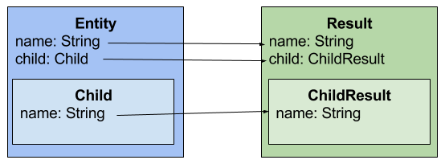
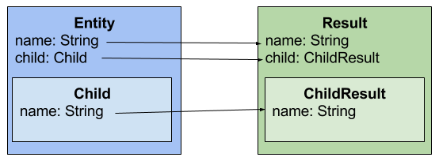

Beanmapper
Library for converting from one Java class to a dissimilar Java class
with similar names based on the Bean
convention
What is BeanMapper?
The core definition of the task of BeanMapper is for converting from one Java class to a dissimilar Java class with similar names based on the Bean convention.
BeanMapper does not transform your objects. It copies all the values of the fields from an object to another object.
You can configure the way BeanMapper should match te fields with annotations.
However BeanMapper does have a lot more functionality than only converting Java classes.
You can read about this in the rest of the documentation.
Using Spring?
Take a look at BeanMapper-Spring for combining the power of BeanMapper together with Spring. Scroll down to the REST examples for usage with BeanMapper-Spring.
Take a look at the BeanMapper-Petshop for samples of using BeanMapper. It shows you how to use the BeanMapper in a REST API in Java. It also show examples of using BeanMapper in combination with BeanMapper-Spring. All examples shown in this documentation are based on this example project.
You can read about this in the rest of the documentation.
Using Spring?
Take a look at BeanMapper-Spring for combining the power of BeanMapper together with Spring. Scroll down to the REST examples for usage with BeanMapper-Spring.
Take a look at the BeanMapper-Petshop for samples of using BeanMapper. It shows you how to use the BeanMapper in a REST API in Java. It also show examples of using BeanMapper in combination with BeanMapper-Spring. All examples shown in this documentation are based on this example project.
Why using BeanMapper?
When building a REST API you work quite often with three kinds of objects.
Why using forms?
Wouldn't it be great if mapping from Form to Entity and from Entity to Result can be done automatically?
Let us suppose we have a tool that is able to map similar fields from dissimilar classes.
In this case, it would be just a matter of passing both instances and delegating the task of mapping from source to target to this tool.
This is why you should use BeanMapper; BeanMapper just does the above described problem in a very easy way.
Want to use BeanMapper? In the next section you can read about using BeanMapper.
For a more detailed use case of why using BeanMapper, read this blog 'The Case for BeanMapper'.
- The Entity; The entity represents the data inside the application.
- The Result; The result represents the entity to the outside of the world. This could be a partially entity.
- The Form; When creating/updating a entity you often want to use a form object to pass the given data to.
Why using forms?
- For security reasons you want to accept only a limited number of fields as input.
- The form fields are simplified to support frontend processing.
- You want to simplify the result for frontend processing.
- You want to expose a limited number of fields for security reasons.
Wouldn't it be great if mapping from Form to Entity and from Entity to Result can be done automatically?
Let us suppose we have a tool that is able to map similar fields from dissimilar classes.
In this case, it would be just a matter of passing both instances and delegating the task of mapping from source to target to this tool.
This is why you should use BeanMapper; BeanMapper just does the above described problem in a very easy way.
Want to use BeanMapper? In the next section you can read about using BeanMapper.
For a more detailed use case of why using BeanMapper, read this blog 'The Case for BeanMapper'.
How to Use
You can convert your objects on four different ways.
Lets assume that we have two classes. SourceClass is your entity that is used inside the application. TargetClass is the class that you would like to expose to the outside.
Map to a new class
Mapping to a new class does first create an instance of the given target class.
Then BeanMapper uses the map to existing instance strategy to map the source to the created class instance.
Take a look at BeanConstruct if you do not have a non-args constructor.
Map to a existing instance
Use this method if you want to override a instance with another instance.
The values of the target instance are overwritten by the given source instance.
Fields are mapped base on the name of the field and based on bean conventions. BeanMapper only maps fields when a field name in the source instance matches a field name in the target instance.
With annotations you have a lot more possibilities to map classes, take a look on the list below.
Map to a collection
Use this method when you want to map a collection of items to a collection of items of an other type.
Of course you can do this for yourself by creating a loop and call map inside each loop. This method is just to make it easy for you. Can also pass a third optional argument to convert the list to. In this case we choose a ArrayList.class.
Convert to a dynamic generated class
This method consist of two different ways:
The first option is called 'downsizeSource'. This method generates a new class based on the source class but only with the fields you want to map. BeanMapper uses the generated class to map over the existing given target instance. The result is that you have mapped only a few fields from the source over the target instance. Use case for this method is for example a PATCH request.
The second options is called 'downsizeTarget'. With this option you can expose a few fields of the source class to the outside. BeanMapper generates a new class based on the given target class but only with the fields you want to exist in the target.
Below examples of both options.
- convert to a new class
- convert to a existing instance
- convert to a collection
- convert to a dynamic generated class
Lets assume that we have two classes. SourceClass is your entity that is used inside the application. TargetClass is the class that you would like to expose to the outside.
public class Source {
public Long id;
public String name;
public Integer age;
public Source(Long id, String name, Integer age) {
this.id = id;
this.name = name;
this.age = age;
}
}
public class Target {
public String name;
public Integer age;
}
Map to a new class
Mapping to a new class does first create an instance of the given target class.
Then BeanMapper uses the map to existing instance strategy to map the source to the created class instance.
Take a look at BeanConstruct if you do not have a non-args constructor.
Source source = new Source(1L, "Henk", 42);
Target target = new BeanMapperBuilder().build()
.map(source, Target.class);
assertEquals("Henk", target.name);
assertEquals(42, target.age, 0);
Map to a existing instance
Use this method if you want to override a instance with another instance.
The values of the target instance are overwritten by the given source instance.
Fields are mapped base on the name of the field and based on bean conventions. BeanMapper only maps fields when a field name in the source instance matches a field name in the target instance.
With annotations you have a lot more possibilities to map classes, take a look on the list below.
| BeanIgnore | Use this when you explicitly don't want to map a field. | docs |
|---|---|---|
| BeanProperty | Use this when you want to map fields that have no matching field names. | docs |
| BeanDefault | Use this when you want to set a default value when the mapped value is null. | docs |
| BeanCollection | Use this when you want to map a field of type Collection. | docs |
Source source = new Source(1L, "Henk", 42);
Target target = new BeanMapperBuilder().build()
.map(source, Target.class);
assertEquals("Henk", target.name);
assertEquals(42, target.age, 0);
Map to a collection
Use this method when you want to map a collection of items to a collection of items of an other type.
Of course you can do this for yourself by creating a loop and call map inside each loop. This method is just to make it easy for you. Can also pass a third optional argument to convert the list to. In this case we choose a ArrayList.class.
List<Source> sources = new ArrayList<Source>();
sources.add(new Source(1L, "Henk", 42));
sources.add(new Source(2L, "Piet", 50));
sources.add(new Source(3L, "Kees", 3));
ArrayList<Target> targets = (ArrayList<Target>) new BeanMapperBuilder().build()
.map(sources, Target.class, ArrayList.class);
assertEquals(3, targets.size(), 0);
assertEquals("Henk", targets.get(0).name);
assertEquals("Piet", targets.get(1).name);
assertEquals("Kees", targets.get(2).name);
Convert to a dynamic generated class
This method consist of two different ways:
- Map only a few fields of the source class over the existing target instance.
- Map to a new target instance and restrict this target instance to contain only the given fields.
The first option is called 'downsizeSource'. This method generates a new class based on the source class but only with the fields you want to map. BeanMapper uses the generated class to map over the existing given target instance. The result is that you have mapped only a few fields from the source over the target instance. Use case for this method is for example a PATCH request.
The second options is called 'downsizeTarget'. With this option you can expose a few fields of the source class to the outside. BeanMapper generates a new class based on the given target class but only with the fields you want to exist in the target.
Below examples of both options.
// Option 1: downsizeSource
BeanMapper beanMapper = new BeanMapperBuilder().build();
Source source = new Source(1L, "Henk", 42);
Target target = new Target("Piet", 12);
beanMapper.wrapConfig()
.downsizeSource(Arrays.asList("age"))
.build()
.map(source, target);
assertEquals("Piet", target.name);
assertEquals(42, target.age, 0);
// Option 2: downsizeTarget
BeanMapper beanMapper = new BeanMapperBuilder().build();
Source source = new Source(1L, "Henk", 42);
Object target = beanMapper.wrapConfig()
.downsizeTarget(Arrays.asList("name"))
.build()
.map(source, Target.class);
String json = new ObjectMapper().writeValueAsString(target);
assertEquals("{\"name\":\"Henk\"}", json);
Download
In order to use Beanmapper in your project, simple add the following Maven dependency.
Version is the latest version of BeanMapper
You can find the javadoc for BeanMapper here.
You can also download the latest jar and include this in your project.
<dependency>
<groupId>io.beanmapper</groupId>
<artifactId>beanmapper</artifactId>
<version>{{version}}</version>
</dependency>
Version is the latest version of BeanMapper
You can find the javadoc for BeanMapper here.
You can also download the latest jar and include this in your project.
BeanProperty
| Annotation | @BeanProperty |
|---|---|
| Arguments | Name: the name that matches the field name on the other side |
| Description | Use BeanProperty if the field name does not match the other field name. You can use this annotation on both sides. |
| Exceptions | BeanNoSuchPropertyException is thrown when BeanMapper can not find a field with the given name |
public class Source {
public Long id;
public String name;
@BeanProperty(name = "otherAge")
public Integer age;
}
public class Target {
@BeanProperty(name = "name")
public String otherName;
public Integer otherAge;
}
Source source = new Source(1L, "Henk", 42);
Target target = new BeanMapperBuilder().build()
.map(source, Target.class);
assertEquals("Henk", target.otherName);
assertEquals(42, target.otherAge, 0);
BeanIgnore
| Annotation | @BeanIgnore |
|---|---|
| Arguments | None |
| Description | Use BeanIgnore when you explicitly don't want to map a field. You can use this annotation on both sides. |
public class Source {
public Long id;
public String name;
@BeanIgnore
public Integer age;
}
public class Target {
@BeanIgnore
public String name;
public Integer age;
}
Source source = new Source(1L, "Henk", 42);
Target target = new BeanMapperBuilder().build()
.map(source, Target.class);
assertNull(target.name);
assertNull(target.age);
BeanDefault
| Annotation | @BeanDefault |
|---|---|
| Arguments | Value: the default value for the field if the mapped value is null |
| Description | Use BeanDefault when you want to set a default value when the mapped value is null. You can use this annotation on both sides. |
public class Source {
public Long id;
public String name;
@BeanDefault("5")
public Integer age;
}
public class Target {
@BeanDefault("Henk")
public String name;
public Integer age;
}
Source source = new Source(null, null, null);
Target target = new BeanMapperBuilder()
.build()
.map(source, Target.class);
assertEquals(5, target.age, 0);
assertEquals("Henk", target.name);
BeanCollection
| Annotation | @BeanCollection |
|---|---|
| Arguments |
elementType: the target collection element type beanCollectionUsage: determines how to deal with the target collection. Below the possible options where REUSE is the default option.
|
| Description | Use BeanCollection when you want to map a field of type Collection. BeanCollection is only necessary if the element type of the collection differs from the other collection element type. You can use this annotation on both sides. |
public class Source {
public Set<Person> items;
}
public class Person {
public Long id;
public String name;
public Integer age;
public Person(Long id, String name, Integer age) {
this.id = id;
this.name = name;
this.age = age;
}
}
public class Target {
@BeanCollection(elementType = PersonResult.class, beanCollectionUsage = BeanCollectionUsage.REUSE)
public List<PersonResult> items;
}
public class PersonResult {
public String name;
public Integer age;
}
Source source = new Source();
source.items = new LinkedHashSet<Person>();
source.items.add(new Person(1L, "Henk", 42));
source.items.add(new Person(2L, "Piet", 18));
source.items.add(new Person(3L, "Gijs", 67));
Target target = new BeanMapperBuilder().build()
.map(source, Target.class);
assertEquals(3, target.items.size(), 0);
assertEquals("Henk", target.items.get(0).name);
assertEquals("Piet", target.items.get(1).name);
assertEquals("Gijs", target.items.get(2).name);
BeanConstruct
| Annotation | @BeanConstruct |
|---|---|
| Arguments | Value: string array with the names of the fields that must be passed in the target constructor |
| Description | Use BeanConstruct when you want to map a to a class without a no-args constructor. BeanConstruct uses his arguments to get the field values from the source class and pass these arguments to the target class constructor. You can use this annotation on both sides. However only BeanConstruct on the target side makes sense because that object has to be created. |
| Exceptions | BeanConstructException is thrown when no valid constructor can be found. BeanInstantiationException is thrown when BeanMapper cannot intiantate the target class. |
public class Person {
public Long id;
public String firstName;
public String prefix;
public String lastName;
public Person(Long id, String firstName, String prefix, String lastName) {
this.id = id;
this.firstName = firstName;
this.prefix = prefix;
this.lastName = lastName;
}
}
@BeanConstruct({"firstName", "prefix", "lastName"})
public class PersonResult {
public String fullName;
public PersonResult(String name1, String name2, String name3) {
this.fullName = name1 + " " + name2 + " " + name3;
}
}
Person person = new Person(1L, "Henk", "de", "Vries");
PersonResult target = new BeanMapperBuilder().build()
.map(person, PersonResult.class);
assertEquals("Henk de Vries", target.fullName);
BeanAlias
| Annotation | @BeanAlias |
|---|---|
| Arguments | Value: the name under which the field must be available |
| Description | Use BeanAlias when want to make a field available under a given name during the mapping process. This can be useful when using fields on a different level in BeanConstruct. This annotations can be used only at source side because you can make fields available from the source with another name for the target. BeanAlias differs from BeanProperty because BeanProperty is only available on the level where the field exist where BeanAlias is available on all mapping levels. |
public class Source {
public Long id;
@BeanAlias("otherName")
public String name;
public Source(Long id, String name) {
this.id = id;
this.name = name;
}
}
public class Target {
public String otherName;
}
Source source = new Source(1L, "Henk");
Target target = new BeanMapperBuilder().build()
.map(source, Target.class);
assertEquals("Henk", target.otherName);
BeanConverters
Implement AbstractConverter
Use SimpleBeanConverter
Nested to Nested
Let's start with an example of mapping nested objects:

BeanMapper does support by default nested objects. Nested in this context means fields that have more fields inside. For example a pet. A pet does have a name, birthDate and a type. Type is an instance of PetType which contains an id and a name. If you want to map that pet you may also want to map the type inside the pet class. BeanMapper just do that.
To indicate which classes are mapped deeper inside, you have to set a package. All classes in the given package and sub-packages are eligible for mapping. The root source and target do not need to be set as such, because the verification is only run against nested classes which should be mapped implicitly as well. Below a example which is showing this use case.

BeanMapper does support by default nested objects. Nested in this context means fields that have more fields inside. For example a pet. A pet does have a name, birthDate and a type. Type is an instance of PetType which contains an id and a name. If you want to map that pet you may also want to map the type inside the pet class. BeanMapper just do that.
To indicate which classes are mapped deeper inside, you have to set a package. All classes in the given package and sub-packages are eligible for mapping. The root source and target do not need to be set as such, because the verification is only run against nested classes which should be mapped implicitly as well. Below a example which is showing this use case.
public class Pet {
public String nickname;
public LocalDate birthDate;
public PetType type;
public Pet(String nickname, LocalDate birthDate, Long typeId, String typeName) {
this.nickname = nickname;
this.birthDate = birthDate;
this.type = new PetType();
this.type.name = typeName;
this.type.id = typeId;
}
}
public class PetType {
public Long id;
public String name;
}
public class PetResult {
@BeanProperty(name = "nickname")
public String name;
public PetTypeResult type;
}
public class PetTypeResult {
public String name;
}
Pet pet = new Pet("Loebas", LocalDate.now(), 1L, "Dog");
PetResult petResult = new BeanMapperBuilder()
.addPackagePrefix(PetTypeResult.class)
.build()
.map(pet, PetResult.class);
assertEquals("Loebas", petResult.name);
// Class PetType in Pet is mapped as well to PetTypeResult
assertEquals("Dog", petResult.type.name);
Nested to Flat
In this example the objects to map does not match and does have a different structure.
Below a example of this case. Take a look at the next example for mapping this example in reverse direction.
This use case comes up if you want to simplify your result to the outside. Your source object contains a nested structure of different fields. You want to simplify that object and create an object that represent this object in an easy way to the outside.
This example shows a owner of a pet. The owner does have a name and a address. The nested address object contains several fields such as street, number and city. For simplicity you want only the name and the living place of the owner in your result. This result uses BeanConstruct which is documented here. With the BeanProperty annotation you can dive into objects on the other side. In this example the annotation references address.city. BeanMapper goes to the address and gets the city from it to map it to the living place in OwnerResult.class. You can dive as deep as you want with BeanProperty.
This use case comes up if you want to simplify your result to the outside. Your source object contains a nested structure of different fields. You want to simplify that object and create an object that represent this object in an easy way to the outside.
This example shows a owner of a pet. The owner does have a name and a address. The nested address object contains several fields such as street, number and city. For simplicity you want only the name and the living place of the owner in your result. This result uses BeanConstruct which is documented here. With the BeanProperty annotation you can dive into objects on the other side. In this example the annotation references address.city. BeanMapper goes to the address and gets the city from it to map it to the living place in OwnerResult.class. You can dive as deep as you want with BeanProperty.
public class Owner {
public String firstName;
public String prefix;
public String lastName;
public Address address;
public Owner(String firstName, String prefix, String lastName, Address address) {
this.firstName = firstName;
this.prefix = prefix;
this.lastName = lastName;
this.address = address;
}
}
public class Address {
public String street;
public int number;
public String city;
public Address(String street, int number, String city) {
this.street = street;
this.number = number;
this.city = city;
}
}
@BeanConstruct({"firstName", "prefix", "lastName"})
public class OwnerResult {
public String fullName;
@BeanProperty(name = "address.city")
public String livingPlace;
public OwnerResult(String firstName, String prefix, String lastName) {
this.fullName = firstName + " " + prefix + " " + lastName;
}
}
Address address = new Address("hondstraat", 42, "Zoetermeer");
Owner owner = new Owner("Gijs", "de", "Hond", address);
OwnerResult ownerResult = beanMapper.map(owner, OwnerResult.class);
assertEquals("Gijs de Hond", ownerResult.fullName);
assertEquals("Zoetermeer", ownerResult.livingPlace);
Flat to Nested

In this case you can use BeanUnwrap annotation. You want to use this annotation for example if you are mapping a form to a entity in your application. Your source object is flat and you want to convert this object to a more complex object in your application.
BeanUnwrap indicates that the fields inside the annoted field should be mapped at the same level as the annotation exist. With this annotation BeanMapper can match fields on a higher level your object structure.
public class PetForm {
public String nickname;
public LocalDate birthDate;
public Pet.Sex sex;
public String familyName;
}
public class Pet {
public String nickname;
public LocalDate birthDate;
public Sex sex;
@BeanUnwrap
public PetType type;
public enum Sex {
MALE, FEMALE, NEUTRAL, HERMAPHRODITIC;
}
}
public class PetType {
public String type;
public String familyName;
}
If you want your annotations at the other side you can use BeanProperty instead of BeanUnwrap. Now you can annotate the source side. Below a example, in this case BeanProperty indicates that BeanMapper should look for a field named familyName in the object PetType.
public class PetForm {
public String nickname;
public LocalDate birthDate;
public Pet.Sex sex;
@BeanProperty(name = "type.familyName")
public String familyName;
}
PetForm petForm = new PetForm();
petForm.nickname = "Loebas";
petForm.birthDate = LocalDate.now();
petForm.sex = Pet.Sex.MALE;
petForm.familyName = "Canidae";
Pet pet = beanMapper.map(petForm, Pet.class);
assertEquals("Loebas", pet.nickname);
assertEquals(LocalDate.now(), pet.birthDate);
assertEquals(Pet.Sex.MALE, pet.sex);
assertEquals("Canidae", pet.type.familyName);
GET request
BeanMapper way & BeanMapper-Spring way
BeanMapper-Spring does not have a special kind of mapping for get requests.
BeanMapper-Spring does not have a special kind of mapping for get requests.
// Some request mappings
public AddressResult findOne(Long id) {
return beanMapper.map(addressService.findOne(id), AddressResult.class));
}
POST request
BeanMapper way
// Some request mappings
public AddressResult create(AddressForm addressForm) {
Address newAddress = beanMapper.map(addressForm, Address.class);
return beanMapper.map(addressService.save(newAddress), AddressResult.class));
}
BeanMapper-Spring way
// Some request mappingsT)
public PetResult create(@MergedForm(value = PetForm.class) Pet pet) {
return beanMapper.map(petService.save(pet), PetResult.class));
}
PUT request
BeanMapper way
BeanMapper-Spring way
BeanMapper-Spring way
@RequestMapping(value = "/{id}", method = RequestMethod.PUT)
public PetResult update(@MergedForm(value = PetForm.class, mergeId = "id") Pet pet) {
return beanMapper.map(petService.save(pet), PetResult.class);
}
PATCH request
BeanMapper way
BeanMapper-Spring way
BeanMapper-Spring way
DELETE request
BeanMapper way
BeanMapper-Spring way
BeanMapper-Spring way